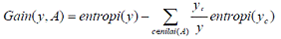

Materi
DECISION TREE (POHON KEPUTUSAN)¶
Nama : ismi Nur Hidayati Z
Nim : 170441100014
Prodi : Sistem Informasi
Matakuliah : Data Mining (A)
latar belakang pohon keputusan
Di dalam kehidupan manusia sehari-hari, manusia selalu dihadapkan oleh berbagai macam masalah dari berbagai macam bidang. Masalah-masalah ini yang dihadapi oleh manusia tingkat kesulitan dan kompleksitasnya sangat bervariasi, mulai dari yang teramat sederhana dengan sedikit faktor-faktor yang berkaitan dengan masalah tersebut dan perlu diperhitungkan sampai dengan yang sangat rumit dengan banyak sekali faktor-faktor turut serta berkaitan dengan masalah tersebut dan perlu untuk diperhitungkan.
Untuk menghadapi masalah-masalah ini, manusia mulai mengembangkan sebuah sistem yang dapat membantu manusia agar dapat dengan mudah mampu untuk menyelesaikan masalah-masalah tersebut. Adapun pohon keputusan ini adalah sebuah jawaban akan sebuah sistem yang manusia kembangkan untuk membantu mencari dan membuat keputusan untuk masalah-masalah tersebut dan dengan memperhitungkan berbagai macam factor yang ada di dalam lingkup masalah tersebut. Dengan pohon keputusan, manusia dapat dengan mudah melihat mengidentifikasi dan melihat hubungan antara faktor-faktor yang mempengaruhi suatu masalah dan dapat mencari penyelesaian terbaik dengan memperhitungkan faktor-faktor tersebut.
Pohon keputusan ini juga dapat menganalisa nilai resiko dan nilai suatu informasi yang terdapat dalam suatu alternatif pemecahan masalah. Peranan pohon keputusan ini sebagai alat Bantu dalam mengambil keputusan (decision support tool) telah dikembangkan oleh manusia sejak perkembangan teori pohon yang dilandaskan pada teori graf. Kegunaan pohon keputusan yang sangat banyak ini membuatnya telah dimanfaatkan oleh manusia dalam berbagai macam sistem pengambilan keputusan.
Pengertian pohon keputusan
Pohon yang dalam analisis pemecahan masalah pengambilan keputusan adalah pemetaan mengenai alternatif-alternatif pemecahan masalah yang dapat diambil dari masalah tersebut. Pohon tersebut juga memperlihatkan faktor-faktor kemungkinan/probablitas yang akan mempengaruhi alternatif-alternatif keputusan tersebut, disertai dengan estimasi hasil akhir yang akan didapat bila kita mengambil alternatif keputusan tersebut.
Manfaat pohon keputusan
Pohon keputusan adalah salah satu metode klasifikasi yang paling populer karena mudah untuk diinterpretasi oleh manusia. Pohon keputusan adalah model prediksi menggunakan struktur pohon atau struktur berhirarki. Konsep dari pohon keputusan adalah mengubah data menjadi pohon keputusan dan aturan-aturan keputusan.
Manfaat utama dari penggunaan pohon keputusan adalah kemampuannya untuk mem-break down proses pengambilan keputusan yang kompleks menjadi lebih simpel sehingga pengambil keputusan akan lebih menginterpretasikan solusi dari permasalahan. Pohon Keputusan juga berguna untuk mengeksplorasi data, menemukan hubungan tersembunyi antara sejumlah calon variabel input dengan sebuah variabel target. Pohon keputusan memadukan antara eksplorasi data dan pemodelan, sehingga sangat bagus sebagai langkah awal dalam proses pemodelan bahkan ketika dijadikan sebagai model akhir dari beberapa teknik lain. Sering terjadi tawar menawar antara keakuratan model dengan transparansi model. Dalam beberapa aplikasi, akurasi dari sebuah klasifikasi atau prediksi adalah satu-satunya hal yang ditonjolkan, misalnya sebuah perusahaan direct mail membuat sebuah model yang akurat untuk memprediksi anggota mana yang berpotensi untuk merespon permintaan, tanpa memperhatikan bagaimana atau mengapa model tersebut bekerja.
Model pohon keputusan
Pohon keputusan adalah model prediksi menggunakan struktur pohon atau struktur berhirarki. Contoh dari pohon keputusan dapat dilihat di Gambar berikut ini.
Disini setiap percabangan menyatakan kondisi yang harus dipenuhi dan tiap ujung pohon menyatakan kelas data. Contoh di Gambar 1 adalah identifikasi pembeli komputer,dari pohon keputusan tersebut diketahui bahwa salah satu kelompok yang potensial membeli komputer adalah orang yang berusia di bawah 30 tahun dan juga pelajar.
Setelah sebuah pohon keputusan dibangun maka dapat digunakan untuk mengklasifikasikan record yang belum ada kelasnya. Dimulai dari node root, menggunakan tes terhadap atribut dari record yang belum ada kelasnya tersebut lalu mengikuti cabang yang sesuai dengan hasil dari tes tersebut, yang akan membawa kepada internal node (node yang memiliki satu cabang masuk dan dua atau lebih cabang yang keluar), dengan cara harus melakukan tes lagi terhadap atribut atau node daun.
Record yang kelasnya tidak diketahui kemudian diberikan kelas yang sesuai dengan kelas yang ada pada node daun. Pada pohon keputusan setiap simpul daun menandai label kelas. Proses dalam pohon keputusan yaitu mengubah bentuk data (tabel) menjadi model pohon (tree) kemudian mengubah model pohon tersebut menjadi aturan (rule).
Algoritma C4.5
Salah satu algoritma induksi pohon keputusan yaitu ID3 (Iterative Dichotomiser 3). ID3 dikembangkan oleh J. Ross Quinlan. Dalam prosedur algoritma ID3, input berupa sampel training, label training dan atribut. Algoritma C4.5 merupakan pengembangan dari ID3. Sedangkan pada perangkat lunak open source WEKA mempunyai versi sendiri C4.5 yang dikenal sebagai J48.
Pohon dibangun dengan cara membagi data secara rekursif hingga tiap bagian terdiri dari data yang berasal dari kelas yang sama. Bentuk pemecahan (split) yang digunakan untuk membagi data tergantung dari jenis atribut yang digunakan dalam split. Algoritma C4.5 dapat menangani data numerik (kontinyu) dan diskret. Split untuk atribut numerik yaitu mengurutkan contoh berdasarkan atribut kontiyu A, kemudian membentuk minimum permulaan (threshold) M dari contoh-contoh yang ada dari kelas mayoritas pada setiap partisi yang bersebelahan, lalu menggabungkan partisi-partisi yang bersebelahan tersebut dengan kelas mayoritas yang sama. Split untuk atribut diskret A mempunyai bentuk value (A) ε X dimana X ⊂ domain(A).
Jika suatu set data mempunyai beberapa pengamatan dengan missing value yaitu record dengan beberapa nilai variabel tidak ada, Jika jumlah pengamatan terbatas maka atribut dengan missing value dapat diganti dengan nilai rata-rata dari variabel yang bersangkutan.[Santosa,2007]
Untuk melakukan pemisahan obyek (split) dilakukan tes terhadap atribut dengan mengukur tingkat ketidakmurnian pada sebuah simpul (node). Pada algoritma C.45 menggunakan rasio perolehan (gain ratio). Sebelum menghitung rasio perolehan, perlu menghitung dulu nilai informasi dalam satuan bits dari suatu kumpulan objek. Cara menghitungnya dilakukan dengan menggunakan konsep entropi.
S* adalah ruang (data) sampel yang digunakan untuk pelatihan, p+ adalah jumlah yang bersolusi positif atau mendukung pada data sampel untuk kriteria tertentu dan p- adalah jumlah yang bersolusi negatif atau tidak mendukung pada data sampel untuk kriteria tertentu. ntropi(S) sama dengan 0, jika semua contoh pada S berada dalam kelas yang sama. Entropi(S) sama dengan 1, jika jumlah contoh positif dan negative dalam S adalah sama. Entropi(S) lebih dari 0 tetapi kurang dari 1, jika jumlah contoh positif dan negative dalam S tidak sama [Mitchell,1997].Entropi split yang membagi S dengan n record menjadi himpunan-himpunan S1 dengan n1 baris dan S2 dengan n2 baris adalah :
Kemudian menghitung perolehan informasi dari output data atau variabel dependent y yang dikelompokkan berdasarkan atribut A, dinotasikan dengan gain (y,A). Perolehan informasi*, gain* (y,A), dari atribut A relative terhadap output data y adalah:

nilai (A) adalah semua nilai yang mungkin dari atribut A, dan y*c adalah subset dari y dimana A mempunyai nilai c. Term pertama dalam persamaan diatas adalah *entropy total y dan term kedua adalah entropy sesudah dilakukan pemisahan data berdasarkan atribut A.
Untuk menghitung rasio perolehan perlu diketahui suatu term baru yang disebut pemisahan informasi (SplitInfo). Pemisahan informasi dihitung dengan cara :
bahwa S1 sampai Sc adalah c subset yang dihasilkan dari pemecahan S dengan menggunakan atribut A yang mempunyai sebanyak c nilai. Selanjutnya rasio perolehan (gain ratio) dihitung dengan cara :
Kelebihan pohon keputusan
-
Daerah pengambilan keputusan yang sebelumnya kompleks dan sangat global, dapat diubah menjadi lebih simpel dan spesifik.
-
Eliminasi perhitungan-perhitungan yang tidak diperlukan, karena ketika menggunakan metode pohon keputusan maka sample diuji hanya berdasarkan kriteria atau kelas tertentu.
-
Fleksibel untuk memilih fitur dari internal node yang berbeda, fitur yang terpilih akan membedakan suatu kriteria dibandingkan kriteria yang lain dalam node yang sama. Kefleksibelan metode pohon keputusan ini meningkatkan kualitas keputusan yang dihasilkan jika dibandingkan ketika menggunakan metode penghitungan satu tahap yang lebih konvensional
-
Dalam analisis multivariat, dengan kriteria dan kelas yang jumlahnya sangat banyak, seorang penguji biasanya perlu untuk mengestimasikan baik itu distribusi dimensi tinggi ataupun parameter tertentu dari distribusi kelas tersebut. Metode pohon keputusan dapat menghindari munculnya permasalahan ini dengan menggunakan criteria yang jumlahnya lebih sedikit pada setiap node internal tanpa banyak mengurangi kualitas keputusan yang dihasilkan.
kekurangan pohon keputusan
-
Terjadi overlap terutama ketika kelas-kelas dan criteria yang digunakan jumlahnya sangat banyak. Hal tersebut juga dapat menyebabkan meningkatnya waktu pengambilan keputusan dan jumlah memori yang diperlukan.
-
Pengakumulasian jumlah eror dari setiap tingkat dalam sebuah pohon keputusan yang besar.
-
Kesulitan dalam mendesain pohon keputusan yang optimal.
-
Hasil kualitas keputusan yang didapatkan dari metode pohon keputusan sangat tergantung pada bagaimana pohon tersebut didesain.
Penerapan decision tree (Pohon keputusan)¶
Bahan yang digunakan
-
membuat data dalam bentuk csv . disini saya membuat data random forest.
-
install aplikasi python untuk menjalankan programnya.
-
install bebrapa library yang diperlukan. library yang diperlukan adalah numpy dan pandas.
-
install library ini pada command prompt. cara install library pandas adalah sebagai berikut :
pip install pandas- cara install library numpy adalah sebagai berikut :
pip install numpy- lalu masukan script berikut pada python :
from decision_tree import DecisionTree
import csv
import numpy as np # http://www.numpy.org
import ast
import random
# Kode starter ini tidak berjalan. Anda harus menambahkan perubahan dan
# masukkan kode yang berjalan dengan benar.
"""
Disini,
1. X diasumsikan sebagai matriks dengan n baris dan kolom d di mana n adalah
jumlah total catatan dan d adalah jumlah fitur dari setiap catatan.
2. y diasumsikan sebagai vektor label dengan panjang n.
3. XX mirip dengan X, kecuali bahwa XX juga berisi label data untuk masing-masing
"""
"""
Kerangka ini disediakan untuk membantu Anda melaksanakan tugas. Anda harus
mengimplementasikan fungsi yang ada seperlunya. Anda dapat menambahkan fungsi baru
selama mereka dipanggil dari dalam kelas yang diberikan.
SANGAT PENTING!
JANGAN mengubah tanda tangan dari fungsi yang diberikan.
JANGAN mengubah bagian APART fungsi utama dari parameter forest_size.
"""
class RandomForest(object):
num_trees = 0
decision_trees = []
# dataset bootstrap untuk pohon keputusan
# bootstraps_datasets adalah daftar, di mana setiap daftar di bootstraps_datasets adalah dataset.stret bootstrap untuk pohon keputusan
bootstraps_datasets = []
#label kelas yang benar, sesuai dengan catatan dalam dataset bootstrap
# bootstraps_labels adalah daftar, di mana daftar 'i'th berisi label yang sesuai dengan catatan
# dataset 'i'th bootstrap.
bootstraps_labels = []
def __init__(self, num_trees):
#Inisialisasi dilakukan di sini
self.num_trees = num_trees
self.decision_trees = [DecisionTree() for i in range(num_trees)]
def _bootstrapping(self, XX, n):
# Reference: https://en.wikipedia.org/wiki/Bootstrapping_(statistics)
#
# TODO: Buat dataset sampel ukuran n dengan pengambilan sampel dengan penggantian
# dari dataset asli XX.
# Perhatikan bahwa Anda juga perlu merekam label kelas yang sesuai
# untuk catatan sampel untuk tujuan pelatihan.
# n = len(XX)
samples = [] # dataset sampel
labels = [] # label kelas untuk catatan sampel
for i in range(n):
randomindex = random.randrange(0, n)
samples.append(XX[randomindex][:-1])
labels.append(XX[randomindex][-1])
return (samples, labels)
def bootstrapping(self, XX):
# Menginisialisasi dataset bootstap untuk setiap pohon
for i in range(self.num_trees):
data_sample, data_label = self._bootstrapping(XX, len(XX))
self.bootstraps_datasets.append(data_sample)
self.bootstraps_labels.append(data_label)
def fitting(self):
# TODO: Latih pohon keputusan `num_trees` menggunakan set data bootstraps
# dan label dengan memanggil fungsi belajar dari kelas DecisionTree Anda.
for i in range(self.num_trees):
self.decision_trees[i].learn(self.bootstraps_datasets[i], self.bootstraps_labels[i])
def getIndexFromOriginal(self):
return
def voting(self, X):
y = []
for record in X:
# Langkah-langkah berikut telah dilakukan di sini:
# 1. Temukan kumpulan pohon yang menganggap catatan sebagai
# out-of-bag sample.
# 2. Prediksi label menggunakan masing-masing pohon yang ditemukan di atas.
# 3. Gunakan suara terbanyak untuk menemukan label final untuk catatan ini.
votes = []
for i in range(len(self.bootstraps_datasets)):
dataset = self.bootstraps_datasets[i]
if record not in dataset:
OOB_tree = self.decision_trees[i]
effective_vote = OOB_tree.classify(record)
votes.append(effective_vote)
counts = np.bincount(votes)
if len(counts) == 0:
# TODO: Special case
# Tangani wadah yang catatannya bukan sampel dari kantong
# untuk salah satu pohon
y = self.bootstraps_labels[self.bootstraps_datasets.index(record)]
else:
y = np.append(y, np.argmax(counts))
return y
# JANGAN mengubah fungsi utama selain dari parameter forest_size!
def main():
X = list()
y = list()
XX = list() # Berisi fitur data dan label data
numerical_cols = set([10, 11, 12, 13, 14, 15, 16, 17, 18, 19, 20, 21, 22, 23, 24, 25, 26, 27, 28, 29]) # indeks atribut numerik (kolom)
# Memuat kumpulan data
print 'reading hw4-data'
with open("hw4-data.csv") as f:
next(f, None)
for line in csv.reader(f, delimiter=","):
xline = []
for i in range(len(line)):
if i in numerical_cols:
# periksa apakah itu jenis aman untuk python
xline.append(ast.literal_eval(line[i]))
else:
xline.append(line[i])
X.append(xline[:-1])
y.append(xline[-1])
XX.append(xline[:])
# TODO:Inisialisasi sesuai dengan implementasi Anda
# SANGAT PENTING: Ukuran forest_size minimum harus 10
forest_size = 20
# Menginisialisasi random forest.
randomForest = RandomForest(forest_size)
# Membuat set data bootstrap
print 'creating the bootstrap datasets'
randomForest.bootstrapping(XX)
# Building trees in the forest
print 'fitting the forest'
randomForest.fitting()
# Menghitung estimasi kesalahan yang tidak bisa dari random forest
# berdasarkan estimasi kesalahan out-of-bag (OOB).
y_predicted = randomForest.voting(X)
# Membandingkan label yang diprediksi dan yang sebenarnya
results = [prediction == truth for prediction, truth in zip(y_predicted, y)]
# ketepatan
accuracy = float(results.count(True)) / float(len(results))
print "accuracy: %.4f" % accuracy
print "OOB estimate: %.4f" % (1-accuracy)
if __name__ == "__main__":
main()
- dan jika di run hasilnya akan seperti ini :

Referensi Materi :
https://medium.com/iykra/mengenal-decision-tree-dan-manfaatnya-b98cf3cf6a8d